Day One is a chat platform plugin for the moment someone joins a group they don’t know yet. The hard part of arriving isn’t the work, it’s the unspoken rules — when to post, how formal to be, whether a question is welcome — so newcomers stay silent and read for weeks. Day One reads the group’s own chat history, turns it into a short private guide, and drafts a first message that fits. Halfway through the project the research told us we were solving the wrong problem, and we let it change our minds.
IXD CAPSTONE · SUMMER 2026Team Project
Reads the group. Guides the newcomer. Drafts the first message.
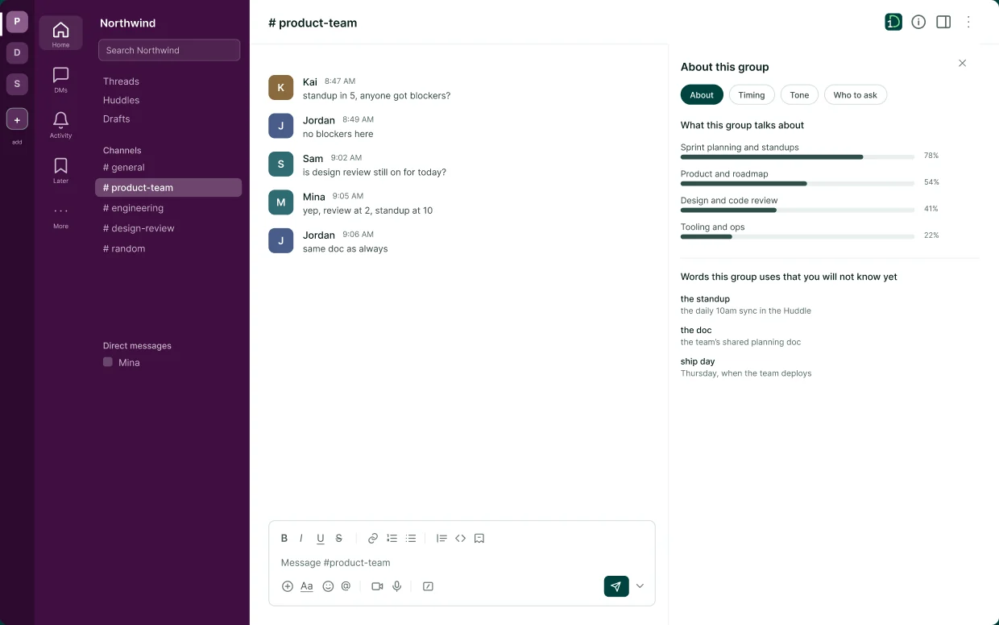
A LOOK AT WHAT WE BUILT
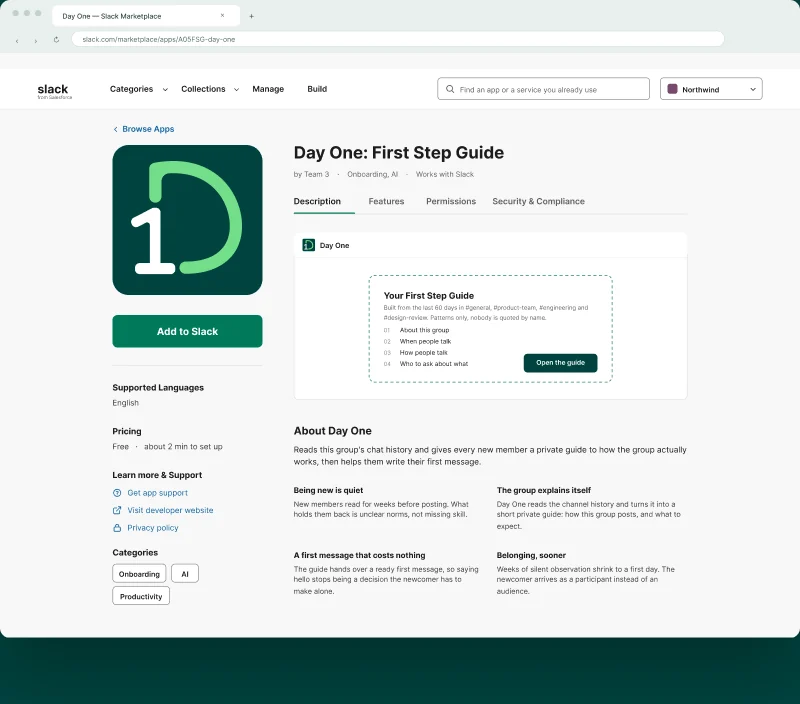
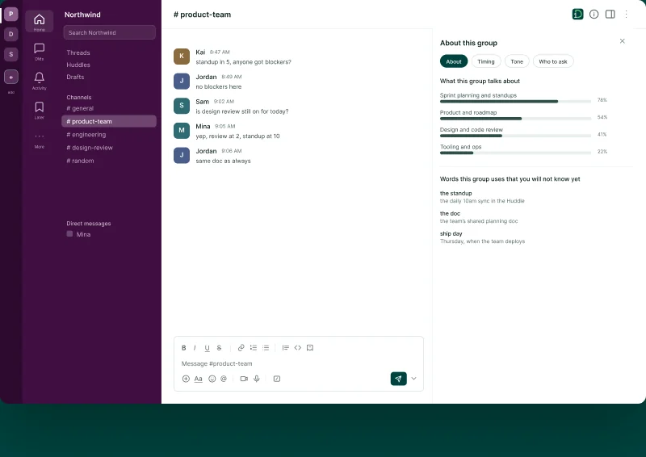
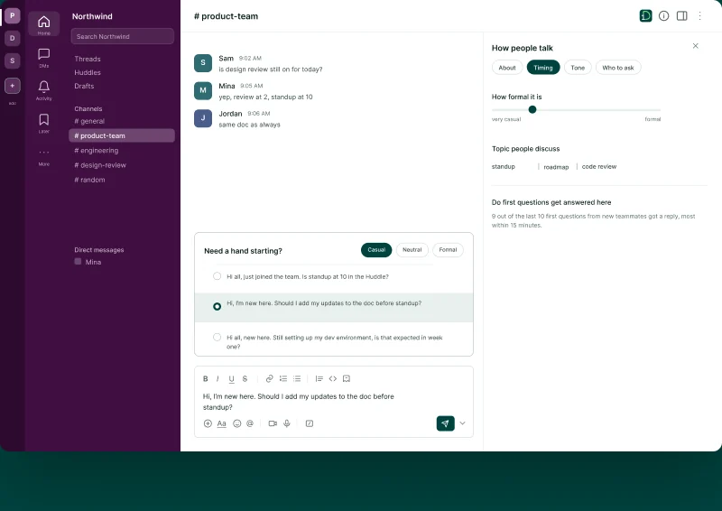
01THE PROBLEM
They don’t know the norms. When to post, how formal to be, whether a question is welcome. So they stay silent and read for weeks. The barrier isn’t skill. It’s the risk of getting it wrong in front of everyone.
“
She lent me an eraser once when I’d forgotten mine, and we became friends. Early on it made me feel safe, knowing I wasn’t the only one in that situation.
And it is measurable across onboarding, peer support, and repeated exposure.
12%
of employees strongly agree their organization onboarded them well.
Gallup · via StrongDM
29%
drop in anxiety symptoms within 90 days when newcomers had peer support.
Peer-support study · PMC (NIH)
208
experiments confirm repeated exposure reliably builds confidence in unfamiliar settings.
Meta-analysis · 208 experiments
02THE SOLUTION
It reads the group’s own chat history and turns it into a short, private guide, then helps write a first message that fits.
Reads the history
Last 60 days, channels the host allows. Patterns only, nobody quoted by name.
Builds a private guide
Each newcomer’s own view: what the group talks about, when people post, who to ask.
Drafts the first message
An editable opener, so saying hello isn’t a decision made alone.
HOST · ONCE
Sets it up in ~2 minutes
Picks channels, edits the auto-drafted welcome, sets who counts as new. Then never touches it again.
NEWCOMER · EVERY TIME
Gets a private guide, automatically
The moment they join: their own read-only guide and message help. Private, so nobody sees what they read.
03HOW WE GOT THERE · RESEARCH
Before building anything, we interviewed very different kinds of “new”: new hires, movers, career-switchers, looking for the pattern underneath.
Qualitative interviews
Across relocation, new jobs, career switches, and new personal practices.
4 participant types
From “new to a community” to “an insider who feels new,” mapped to compare.
Affinity mapping
Clustered every quote into themes, then pulled the recurring tensions out.
Affinity maps: clustering interview quotes into themes
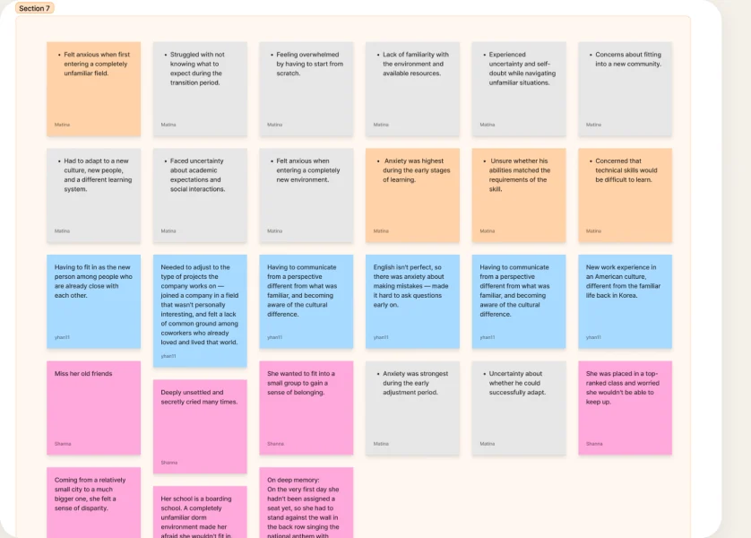
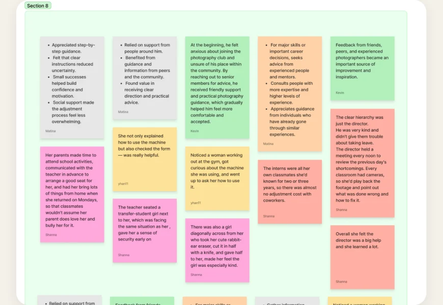
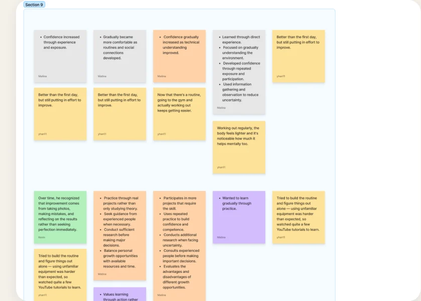
Six themes surfaced. Read together, they pointed one direction:
04THE PIVOT
Our first instinct was loneliness. But the “Silent Researcher” persona showed the real barrier. It wasn’t being alone. It was not knowing how the group works, and being afraid to reveal it.
How might we help a newcomer quickly find someone in the same situation, so they feel “I’m not the only one”?
How might we give a newcomer early, low-risk guidance into a group’s unspoken norms, so they feel “I know how this works”?
That shift changed the product itself, not just the words on a slide:
THE NAME
First Step Guide→Day One
“First Step Guide” described a feature. “Day One” names the feeling: the first day, made survivable.
THE STRUCTURE
New channel→Read-only panel
The early version made a public channel in everyone’s sidebar. Now: one private box, only the newcomer sees it, read-only.
05TEST BEFORE BUILDING
We tested the flow on paper before investing in real screens. Three people, four tasks, host and newcomer. We watched for hesitation, skips, and whether they reached a first message.
PARTICIPANTS
Jack (IxD) · Seiya (Film) · Alex (Transportation)
TASKS
Download the agent · Personalize settings · Read group info · Write & send first message
METHOD
Paper prototype, run as a think-aloud walkthrough
Three frictions surfaced. Each one became a fix we carried into the real build:
With the flow validated, we built it for real. ↓
06THE BUILD
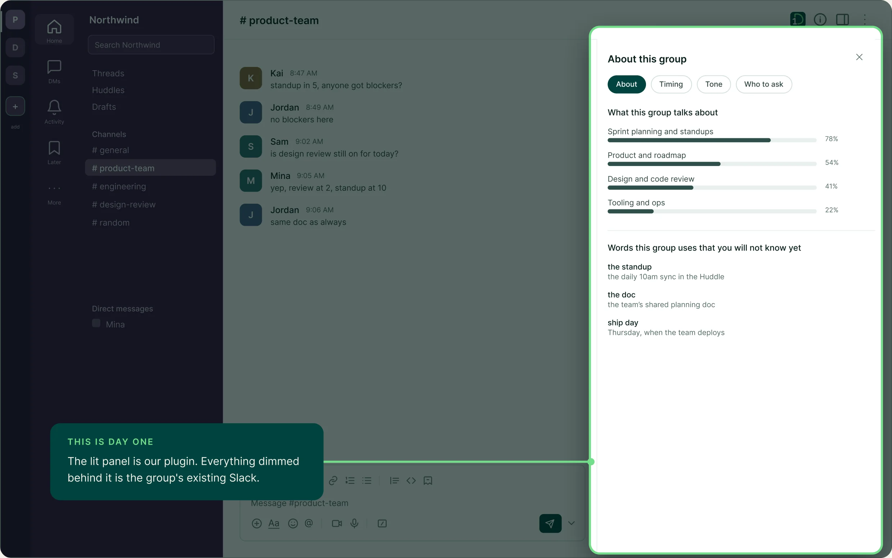
Host · sets it up once
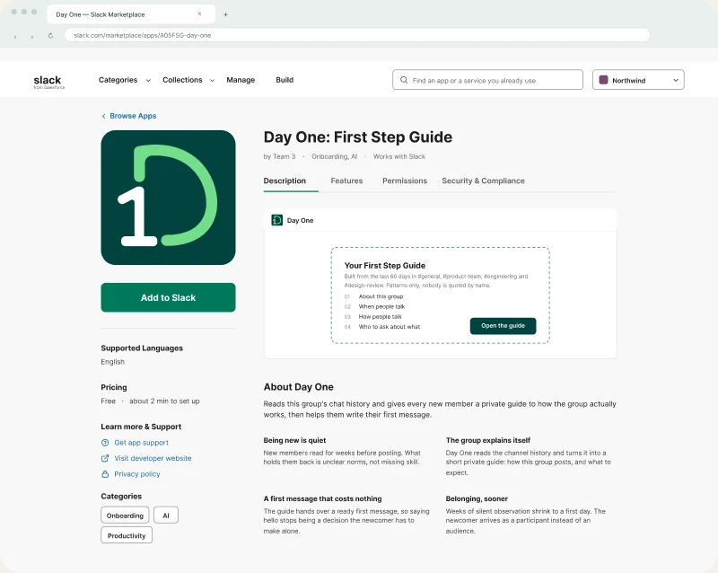
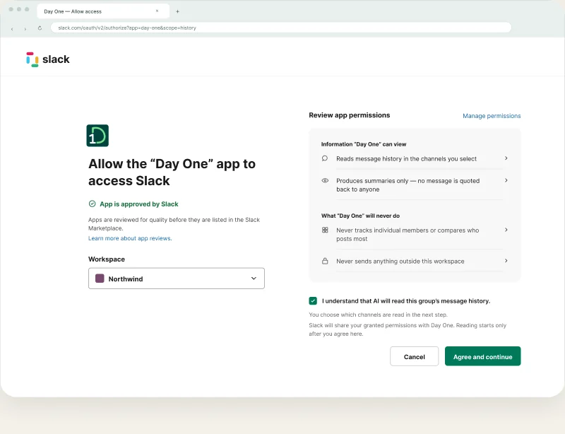
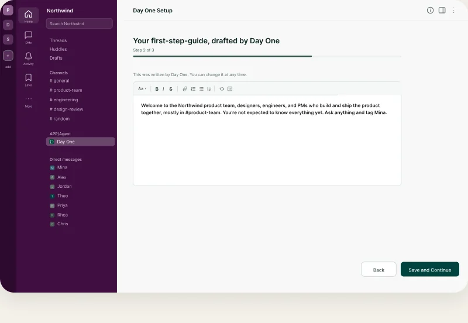
Newcomer · the first ten minutes
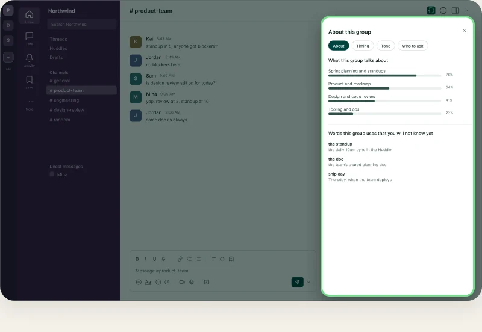
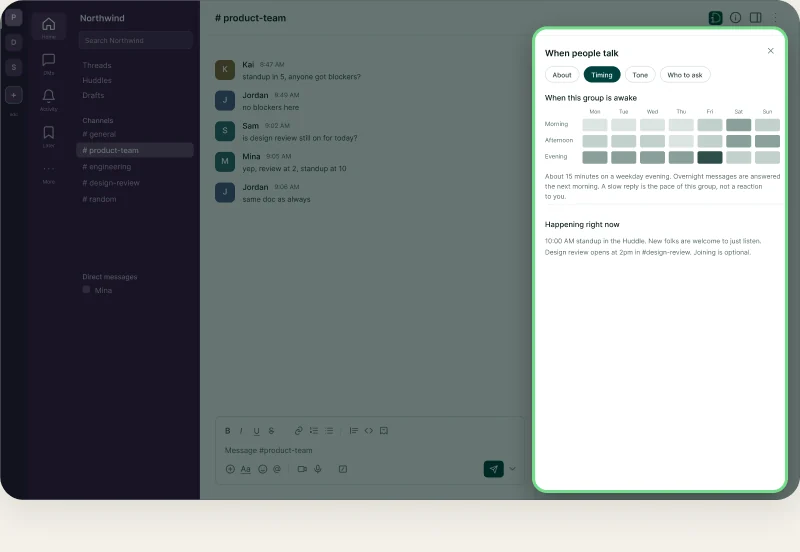
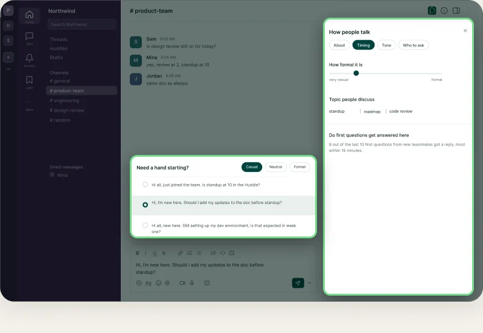
07DESIGN DECISIONS
LANGUAGE
We never say “anxiety” in the UI
The research is about anxiety; the product isn’t. In-app copy stays functional, like “when people talk” and “who to ask,” because naming the fear on screen makes the user feel watched.
PRIVACY
Anonymous by construction
Hosts control the guide with rules, not names: a join date, a message count. Patterns only, never who posts most or who read what. Privacy is the data model, not a setting.
PRESENCE
One quiet box, never a channel
The old version added a channel to everyone’s sidebar. Now: one dashed box only the newcomer sees. Dashed borders mark every surface the app owns.
RESTRAINT
Mint appears once per screen
In Slack’s dense aubergine UI, one accent is enough. Mint marks only the Day One row, so it’s findable without competing for attention.
08REFLECTION
We could have shipped the first idea. Instead we followed the interviews to a sharper problem, and the product got quieter, more private, more useful.
Weeks of silent observation, shrunk to a first day.
SOURCES
Onboarding: Gallup, State of the Global Workplace, cited via StrongDM “Employee Onboarding Statistics.” Peer support: randomized peer-support intervention, PMC/NIH (PMC9358944). Repeated exposure: meta-analysis of 208 experiments on exposure and confidence in unfamiliar settings.